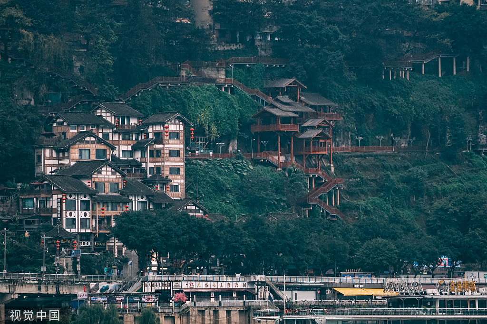
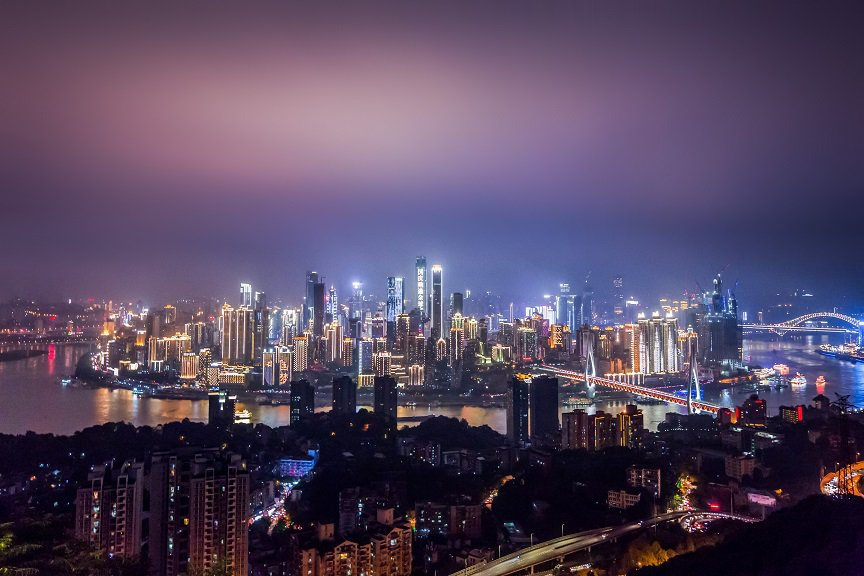
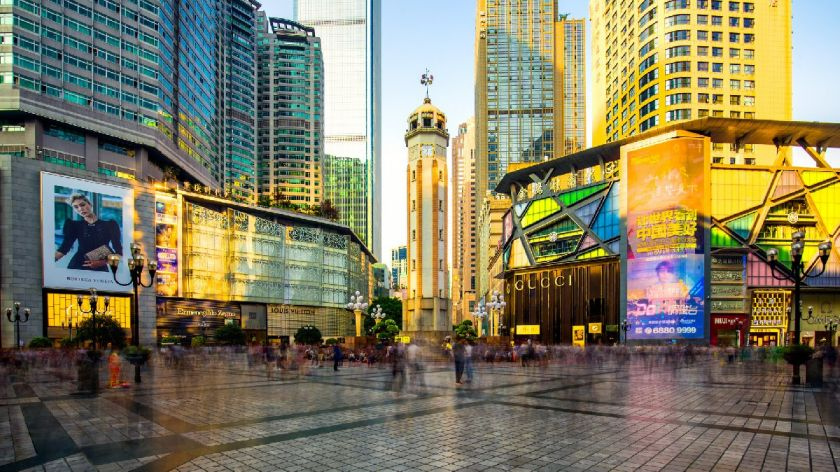
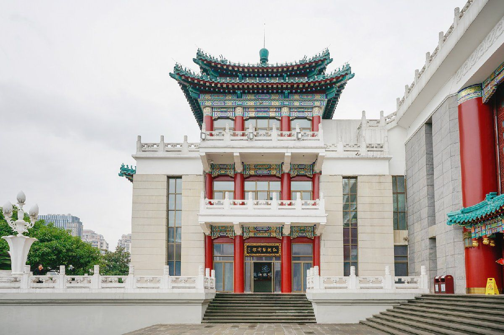

去重庆旅游吧，夜景、火锅……让你在重庆乐不思蜀。下面总结一下重庆市内几大必去旅游景点，给前去重庆旅游的人儿一些帮助。
1、重庆两江游
从清巴渝十二景中的“龙门浩月”“字水宵灯”到如今的两江夜游、南山夜景，重庆璀璨的夜景早已享誉国内外，以城区繁华区灯饰群为中心，道路干 道和桥梁华灯为纽带，车船流光，穿梭于茫茫灯海之中，满天繁星似人间灯火，遍地华灯若天河群星。
“不览夜景，未到重庆”
从朝天门码头出发至黄花园大桥，在游船上夜游长江和嘉陵江。调头至两江交汇处附近后返回朝天门码头。
航程约20公里，游览时间约60分钟。沿途可观赏到湖广会馆古文物建筑群、南滨路、过江索道、长江大桥、朝天门大桥、朝天门广场、解放碑中央商务 区、重庆大剧院、科技馆以及最具巴渝传统建筑特色“吊角楼”为主体的洪崖洞民俗风貌区等。
乘船地点：洪崖洞客运码头
时间：晚班18:30~22:00
票价：158元左右，不同船型价格不一
交通指南
轻轨：乘坐轻轨1号线到小什字下车，8出口
公交：乘坐414路、440路、480路区间、503路、观光巴士t001路、观光巴士t002路、观光巴士t480路至长滨路九码头站下车
2、洪崖洞

洪崖洞地处长江、嘉陵江两江交汇的滨江地带。以具有巴渝传统建筑特色的“吊脚楼”风貌为主体，形成了别具一格的“立体式空中步行街”。古色古 香的民俗风貌与现代灯光相交织，可望吊脚群楼观洪崖滴翠，逛山城老街赏巴渝文化，烫山城火锅看两江汇流，与重庆大剧院、朝天门码头隔岸相 望，灯火璀璨，金碧辉煌。
最佳观看点：洪崖洞对面的沿江路、嘉陵江大桥
票价：免费（需提前网上预约）
交通指南
公交：乘坐111路、151路、181路、262路、466路、476路、0491路、866路、观光巴士t001路至洪崖洞站下车
轨道：乘坐轨道交通2号线至临江门站下车或乘坐1号线、6号线至小什字站下车
3、南山一棵树观景台

重庆南山一棵树观景台与重庆主城区隔江相望，在这里可以看见重庆城这座山水之城的起伏面貌。环抱的两江，飞跨的长桥，错落有致，色彩缤纷 的整座城市，在夜空的衬托下，难分天上人间。
地点：重庆市南岸区龙黄公路靠近黄桷垭路段
开放时间：9:00-22:30
门票：30元（优惠价27元）
购票方式：点此即可购买
交通：市区去南山一棵树有364/347路公交车，在四中站下车后步行可到。
4、重庆解放碑
重庆是一座凝结了红色精神与无数历史尘雾的城市，而今在鳞次栉比，密不透风的高楼中耸立着的解放碑显得有些矮小了，但却好是对历史的一个交代。
解放碑之于重庆，就像王府井之于北京，北京路之于广州，南京路之于上海，春熙路之于成都一样。这里是重庆的CBD，更是这座城市的时尚 高地，最让人目不暇接的是出没在重庆时尚风口浪尖上的重庆美女。于是在解放碑打望重庆美女成为很多外地人的幻想，自然更不虚此行。就凭 这一点，就足以将其推上重庆十大目的地前三的宝座。
解放碑展示重庆独有的都市形象，集逛街购物、娱乐、小吃、打望于一体。

门票：免费
地址：位于重庆市渝中区商业区中心部位，民族路、民权路、邹容路交汇的十字路口处
交通：乘坐地铁1号线至较场口下车，从9号口出直走两个路口即到;或乘坐2号线至临江门站下
解放碑旅游攻略
旅游路线：解放碑(吃吃喝喝购物)→洪崖洞(吹江风看江景的好地方)→魁星楼(魔幻重庆)步行就能到了
5、中国人民大礼堂
1987年，一部由英国皇家建筑师学会和伦敦大学著名专家教授共同主编增订出版的经典著作《比较建筑史》一书，首次向世界介绍了新中国建立后 国内著名建筑，重庆人民大礼堂位列第二。
重庆人民大礼堂实属重庆市的官方名片，重庆正面形象的杰出代表。为了全面了解重庆，人民大礼堂是必须看的。除了恢宏的建筑，人民大礼堂更 多的是展示重庆人民刚硬不屈的城市性格。人民大礼堂外的人民广场，夜景也是十分了得，加之灯光音乐喷泉助兴，实在是美不胜收。人民大礼堂 旁是著名的长江三峡博物馆，其等比例浓缩长江三峡的全貌及历史由来，值得一看。

地址：重庆市渝中区人民路173号
门票：10元
交通：坐2号线在曾家岩下车
重庆还有许多旅游打卡地和美食，欢迎来重庆感受本土热情